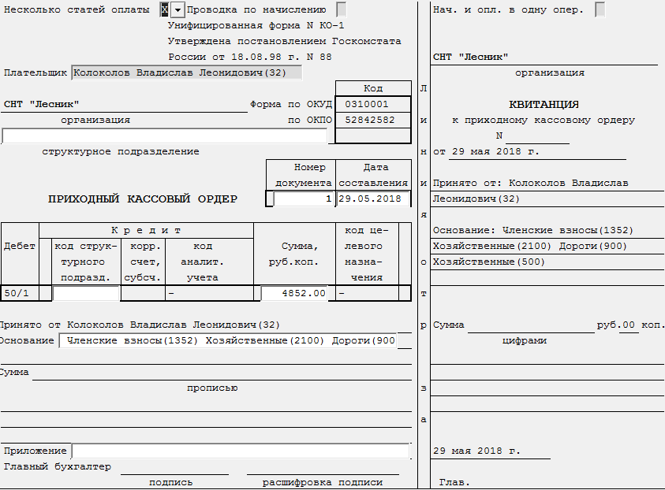

Бланк "Поступление платы (с приходным ордером)"
Данный бланк предназначен для внесения оплаты по участку (рис. 1).

Рис. 1. Бланк "Поступление платы (с приходным ордером)"Рассмотрим поля, необходимые для заполнения:
-
Несколько статей оплаты - указывается, по одной или по нескольким статьям будет вноситься оплата.
-
Проводка по начислению - указывается, формировать ли проводки по начислениям.
-
Нач. и опл. в одну операцию - указывается, помещать ли в одну операцию проводки по оплатам и начислениям.
-
Плательщик - выбирается плательщик из справочника собственников участков.
-
Номер документа - указывается номер документа. Присутствует автоматическая нумерация. Если документ с указанным номером уже существует, то будет выведено предупреждение.
-
Дата составления - дата составления документа/внесения оплаты.
-
Основание - указывается основание, за которое вносится оплата. Выбирается из справочника.
После заполнения полей, влияющих на расчет, необходимо пересчитать бланк. Для
этого нажмите кнопку
 на панели инструментов,
клавишу F9, или комбинацию клавиш Ctrl + Enter.
на панели инструментов,
клавишу F9, или комбинацию клавиш Ctrl + Enter.
После пересчета на экране отобразится окно редактирования хозяйственной операции.
Добавлена возможность формирования приходного ордера для блока СНТ из журнала хозяйственных операций. Для этого необходимо нажать на операцию правой кнопкой "мыши" и выбрать пункт Печать документа.